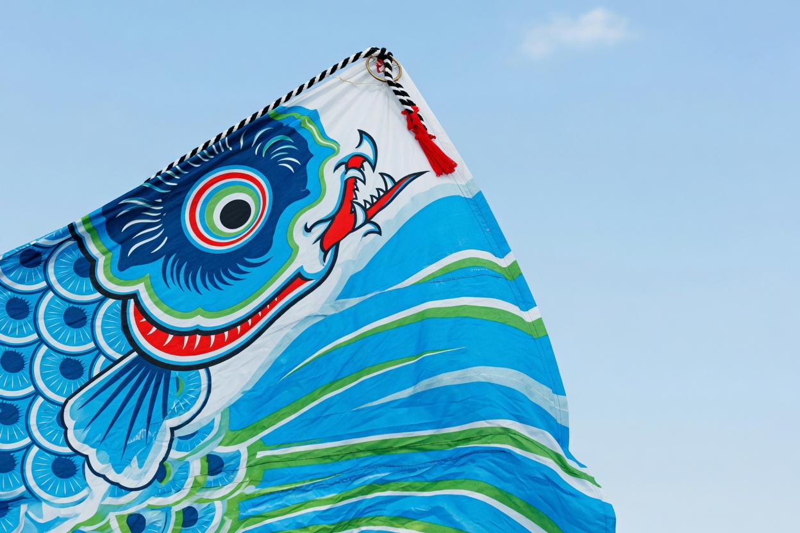
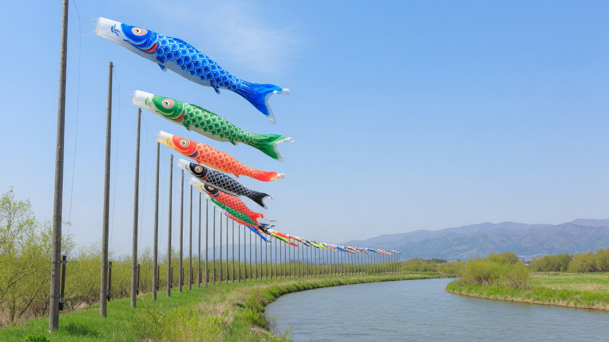
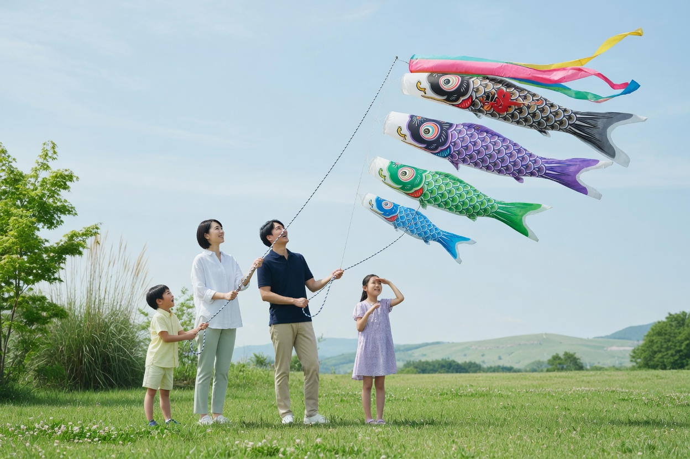
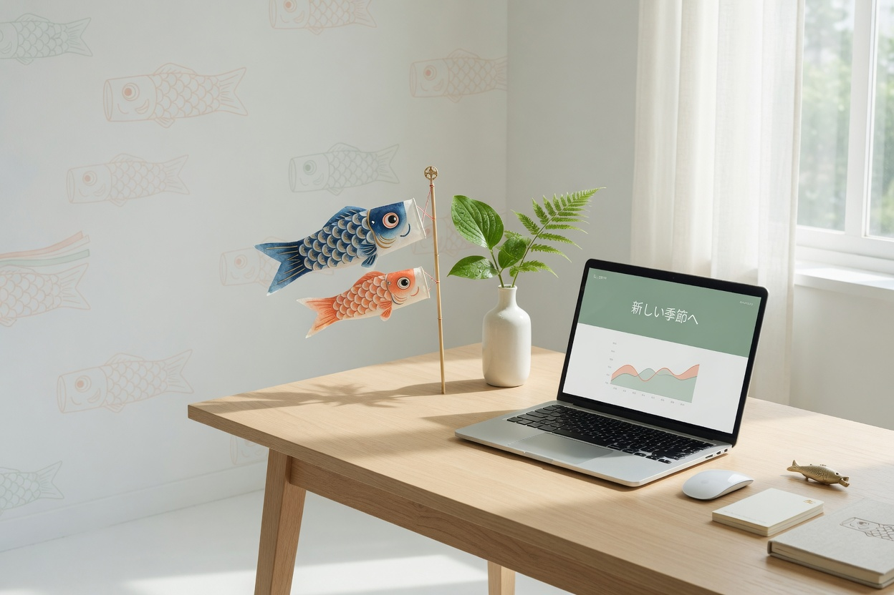
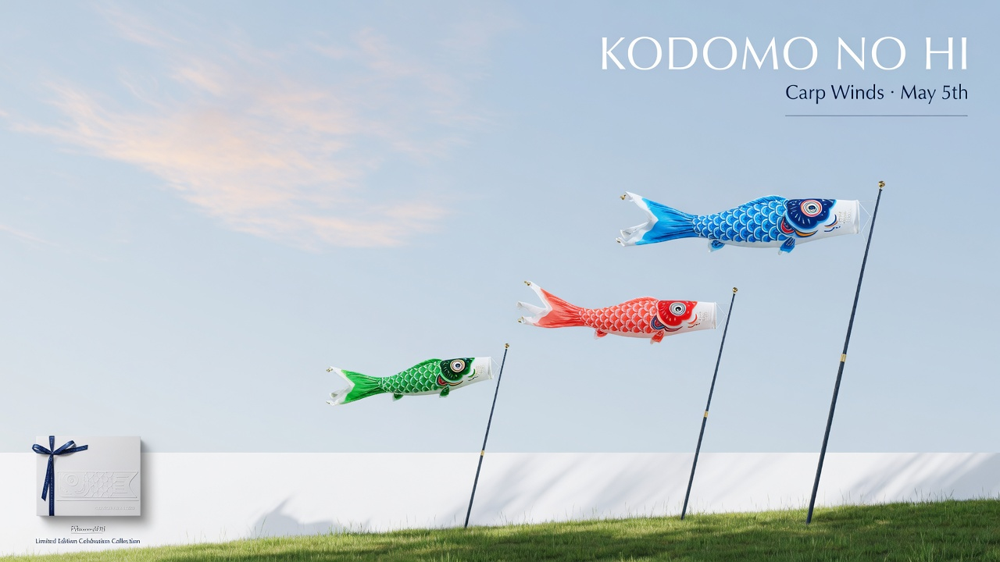

Koinobori is the modern home for Children's Day — design, send, and witness the carp that becomes a dragon.
On Children's Day, families raise koinobori so their children can see what courage looks like in the wind. We built a place where that ritual lives in the present — precise, beautiful, and yours.


One pole for each child. Colors chosen by the family. Messages written in the morning and carried by the wind all day. The river below is the same one your grandparents knew.
Everything you need to mark the day properly — without noise.
Choose colors, write the wish, pick the pole. Your koinobori is made once and lives forever in the sky.
Deliver a private flight to grandparents, aunts, a child who moved away. They receive a link and the wind.
Enter the living world. Scroll through the valley. Watch every streamer you raised move in real time.

Courage is not loud. It is the steady work of rising against the current until the body changes shape.
The dashboard is where you design, schedule, and follow every streamer you have ever sent. No feed. No noise. Just the wind and the names.
Open your dashboard